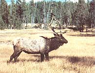

If you like people, love the outdoors, and respect nature, you can turn those assests into a paying business.
Sometimes it takes a bit of energy and a willingness to take chances to achieve the freedom of rural living and self-employment. At least, that was the way it worked out for me a few years back. I was a logger working in the Chequamegon National Forest here in Wisconsin when the pulp market slipped down the hill and took my profession with it. To keep my family in groceries, I decided to try to make a living by doing what I love most ...hunting and fishing. In short, I became a professional guide.
And I've never regretted that career change. Furthermore, if you-like me-are an avid outdoor sportsperson, live in an area that has a better-than-average supply of fish and game, and know (or are willing to work hard at learning) a good bit of woodsmanship, there's no reason why you, too, can't become a professional guide.
FINDING THE TRAIL
Generally, the nature of the guide business almost dictates that you enter it on a part-time basis. After all, it takes time to build up a regular clientele of men and women who find your services valuable, who return year after year, and who will spread the word to others. After a season or two-if you're good, if you work at your job, and if you're at least a little bit lucky-you'll have built up a business that can support you on a full-time basis.
One requirement for this type of work that can easily be overlooked is a genuine enjoyment of your fellow man. After all, guiding is very much a people game. Your clients want to enjoy themselves in the outdoors, and a good part of that enjoyment should come from you ...from your pleasant professional personality, positive outlook, and ability to lighten potentially dull or disappointing moments with the right words, actions, and sometimes even a well-chosen yarn.
Aside from an outgoing, pleasant manner and a genuine love of and respect for nature, the guide's most important asset is woodsmanship. No matter where in this big, beautiful land you live, there are angling and hunting techniques that are unique to your part of the country. Make it your business to be well versed in these local strategies.
The best way I've found to pick up a lot of knowledge and experience in not too much time is to hire on with an established, respected outfitter-as a guide, if possible; as a cook or camp swamper, if necessary.
Generally, fishing guides work independently. But when it comes to hunting, there are two classes of outdoor professionals. An outfitter is a big operator who provides all the services visiting sportspersons might need, including transportation, lodging, riding and pack animals, meals, guiding, and post-trip arrangements for processing and shipping game. Often an outfitter employs several guides to take clients out while he or she sits back at headquarters and takes care of the business end of things. A guide, on the other hand, offers services in the field, taking customers to game and usually providing transportation (even horses) ...but he or she rarely provides the other amenities offered by an outfitter.
If you can't arrange to hire on with an experienced outfitter or guide for paid, on-the-job training, the next best thing is to switch places for a while by becoming a customer. Hire a guide to lead you to the best hunting and fishing spots in your locality and to teach you some of the tricks of the trade. In either case, try to absorb as much outdoor savvy as possible from the voice of experience.
Another good source of knowledge is the printed page. There's a wealth of information recorded in hunting and fishing books and magazines, and studying such publications can enable you to talk intelligently about the animals and fish you're going after. Field guides can help you learn to identify the plants and such your clients will be seeing (and, most likely, asking you about).
But the bottom line for guide training is to lace on your boots and get out there! Buy the appropriate topographical maps, learn to read them, and study them until you have the terrain features of your working area locked in your mind. Then head for the woods and spend plenty of time on the best fishing lakes, along the shores of local rivers and streams, and in the "bush." (You can even take your spouse and kids along on these learning outings and share the pleasures of the outdoors with the family.)
Furthermore, don't overlook the old-timers in your neck of the woods, since they're often veritable founts of wisdom concerning local outdoor history and lore. For example, I've learned a great deal from Tom Ebert, a gent who was 77 years young the first time he took me bird hunting in the Chequamegon National Forest and who nonetheless stepped out with the energy of a teenager. Tom was a logger in this area for over 40 years and knows the land as well as do the deer and bears that make it their home. He once showed me some photos of the flowage area of a large local lake, taken before it was flooded. Now I spend much of my time guiding on that same impoundment, passing Tom's entertaining stories on to my clients and taking advantage of my special knowledge of the lake's subaqueous topography to improve the fishing.
Overall, my relationships with several local old-timers have been beneficial to all involved: These elderly outdoorsmen have enjoyed being in the company of a younger person who's interested in hearing what they have to say; I'm glad to soak up their knowledge and "color"; and my clients gain from my improved ability to take them to the best hunting and fishing action. So make plans, if you can, to go hunting and angling with the oldsters in your area. Then-once you're in the business-when the fishing is lousy and the game isn't moving, you can delight your customers with the stories and wit that your older friends have willed to you.
GETTING OUTFITTED TO OUTFIT
Fortunately, most nimrods have their own weapons and gear. But if you want to be a year-round guide who handles anglers during the warmer months when there's no hunting action, you'll need a boat and motor (or at least a canoe and strong paddling arms!). It doesn't have to be a fancy rig, though the more comfortable a boat is, the better for all concerned. For long days on the water, seats with backrests are godsends. Be sure to check state regulations regarding commercial boating, then make certain that your craft con forms to the law and that you have legal and adequate flotation devices aboard at all times.
You should always carry plenty of extra tackle on fishing expeditions, especially if you plan to use local or esoteric angling methods that your customers can't be expected to know about ahead of time. Your ability to provide the just-right lure or piece of gear can save many a fishing day.
When guiding hunters, it's up to you to provide transportation into and out of the woods (and maybe to and from the local airport, if your clients are nonlocals whose motels or resorts don't provide that service). A truck is best for the purpose, and four-wheel drive is a big plus for surefootedness as well as "flavor." But if it's all you can come up with at first, almost any vehicle will do, as long as it's in good repair.
Here's a list of items I've found handy to keep at the ready for both hunting and fishing outings:
First aid kit
Bug spray or ointment
Extra fishing tackle and/or ammunition (ask customers to specify in advance what caliber or gauge they'll be using)
Rain gear (heavy plastic garbage bags make great emergency ponchos)
Small tool kit for repairing fishing reels, guns, and camp equipment
Water (and perhaps a thermos of hot coffee or tea)
Toilet paper (white, since it biodegrades much faster than colored tissue does)
Snacks
KEEP IT LEGAL
Protect both your clients and yourself with proper insurance: liability at the least and, preferably, comprehensive coverage that will replace your boat, truck, animals, and other expensive tools of the trade. (I've found such coverage to be relatively inexpensive, as insurance goes.)
Many states require that outfitters and hunting and fishing guides be licensed. Often you'll also need to carry the appropriate hunting and fishing licenses and stamps with you, even if you won't be holding a rod or carrying a weapon. Furthermore, it's the guide's responsibility to see that clients have all the proper papers. Nothing can cut short a professional outdoorsperson's career more effectively than failing to adhere to the law or allowing customers to break it.
The legal aspects of professional guiding and outfitting can sometimes get a bit complicated. In North Carolina, for example, no special license is required in order to become a fishing guide, and all that's needed to take paying customers hunting is six months' residency and a $6.00 hunting-guide license that can be bought over the counter at most sporting goods stores. But in the sportsperson's paradise of Colorado there's a single, catchall license that covers hunting outfitters and guides, as well as fishing guides. And while the current requirements for this license arc fairly modest (residency, 18 years of age, posession of a standard Red Cross card, and no game-related felony violations on record), that soon may change.
It seems that lately Colorado's highly organized professional outfitters have started their own efforts to crack down on "weekend guides," who buy licenses and advertise in the local papers during big-game season each year ...and then deliver poor services their unlucky clients. These ill-prepared parttimers, the pros say, are giving all Colorado hunting and fishing professionals a bad name. In short, mere possession of a license isn't any sort of guarantee of a guide's worth ...buy membership in state outfitters' organizations should be.
WHAT TO CHARGE FOR YOUR SERVICES
Guiding fees vary from place to place and, are directly related to the services rendered. Rates usually include boat and motor use transportation to and from fishing and hunting grounds, and-sometimes-the use of extra equipment that the guide supplies (lures, poles, guns, and such).
The best method of setting prices is to follow the lead of those already in business in your vicinity. Check with outfitter and guide associations or with several established guides...then let your rates reflect theirs (taking into account your relative experience, equipment, and similar considerations). At first, offering your services at slightly below the going rate may help you get started, but don't sell yourself short!
Once your rates are set, your equipment's up to snuff, and you're a walking encyclopedia of woodsmanship, you can start filling, your date book with paying clients.
HUNTING AND FISHINGFOR HUNTING AND FISHING CLIENTS
There are lots of ways to find prospective customers, beginning with making a trip to the local print shop and having a batch of business cards made up. In addition to your name, address, and phone number, the cards should show your state license number, membership in any-professional organizations, and your guiding specialty (bow hunting, nature photography, deep-water fishing, or whatever). Also, a small likeness of one or more species of fish or game will add an attractive touch to your little advertising handouts.
With business cards in hand, head for the places where sportspersons are likely to congregate: marinas, sporting goods stores, motels, and even taverns. Talk to the managers and owners of these establishments, get to know them if you can, and tell them you're open for business if any of their customers mumble something about needing a hunting or fishing guide. Hand out your cards as it they were candy.
Resorts can be especially good hunting grounds for potential clients. Owners of such places quite often receive advance inquiries from sporting patrons who are considering a visit to your area ...and whose choice of a hunting "headquarters" may depend upon the availability of guides. So a good relationship with a resort owner or manager can be mutually beneficial ...and can net you a wealth of customers.
Guides who are already established in your locale can also be of aid to you in those first, lean seasons. During the busiest times of year, many of these veterans suddenly discover that they've overbooked themselves. Let them know that, while you're not trying to steal their clients, you'd be happy to absorb the overflow, thus preventing the bad PR caused by broken reservations.
Run advertisements listing your services in local and regional publications ...which are often subscribed to by out-of towners who frequent your neck of the woods. Finally, chat with the folks at your local chamber of commerce office to find out what they can provide in the way of ideas for promoting your enterprise. While you're there, drop off a stack of business cards to be handed out.
PAPERWORK, PAPERWORK
Unfortunately, there's more to the guiding profession than just running around in the wilds. You've got to keep records, just as any other businessperson does. It's best to maintain ledger books with a listing of all your business-related expenses ...and to keep a second set of figures showing your income. If you're making an honest effort to get your operation into the black, the Internal Revenue Service will give you three years to get on your feet and make a profit. After that, it'll declare your business unproductive and will allow no more deductions for it.
Keep a list of your clients' names, addresses, and phone numbers-and send each of them a card at Christmas, suggesting early, booking for the coming season. It's a great way to get repeat business.
THE REWARDS
Along with enjoying lots of time in the out-of-doors and earning the satisfaction of a job well done, you can (if you hustle) make a few bucks during your first year as a guide ...though, unless you're truly exceptional, you won't get rich. But if you stay at it, you'll eventually pass the tenderfoot stage and build a reputation and a regular clientele. Then you can expect to earn a decent living. Some top guides, as a matter of fact, regularly net more than $25,000 a year. That's not bad money for doing what others are paying to do!
IT CAN BE MORE THAN JUST A DREAM
Well, there you have it-some of the ins and outs of a career as a guide. Naturally, as you gain experience and constantly experiment and learn, your skills will improve, your reputation as an honest, knowledgeable guide will grow-and so will your business. Becoming a professional guide might very well turn out to be your route to freedom, just as it has been mine.
In short, guiding can be a dang good way to have your life-in-the-outdoors cake and eat it too!
EDITOR'S NOTE: For a peek at how one man parlayed his interest in ocean surf-fishing into a thriving guiding, writing, and public-speaking career, dig back through your stack MOTHER issues to No. 58. Give Peggy Payne's "Your Angling Know-How Could Earn You A Living!" on page 48 a perusal (Back issues are available from Mother's Bookshelf(restricted); 105 Stoney Mountain Rd., Hendersonville, NC 28791, for $3.00 each plus $1.00 for postage and handling.)
Related Articles
Tips for Hunting Guides and Outfitters
|
 |
|
|